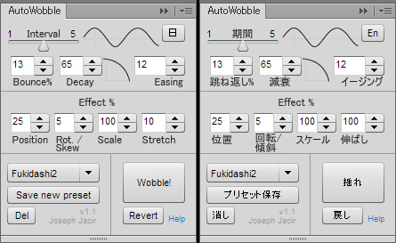

Installation & Setup
インストールとセットアップ
Workflow
使い方 / ワークフロー
Controls コントロール
Language 言語
Keyboard / Command
キーボードショートカット / コマンド
Keyframes キーフレーム
Interval 期間
Bounce % 跳ね返し％
Decay 減衰
Easing イージング
Effect % 効果％
Position, Rotation/Skew, Scale
位置、回転/傾斜、スケール
Stretch 伸ばし
Presets プリセット
Select, Save new preset, Del
プリセット選択、保存、消し
Run 実行
Wobble! 揺れ！
Revert 戻し
Examples 例